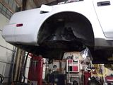
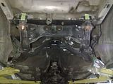
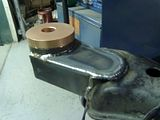
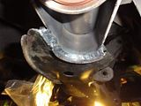
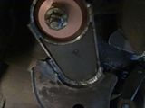
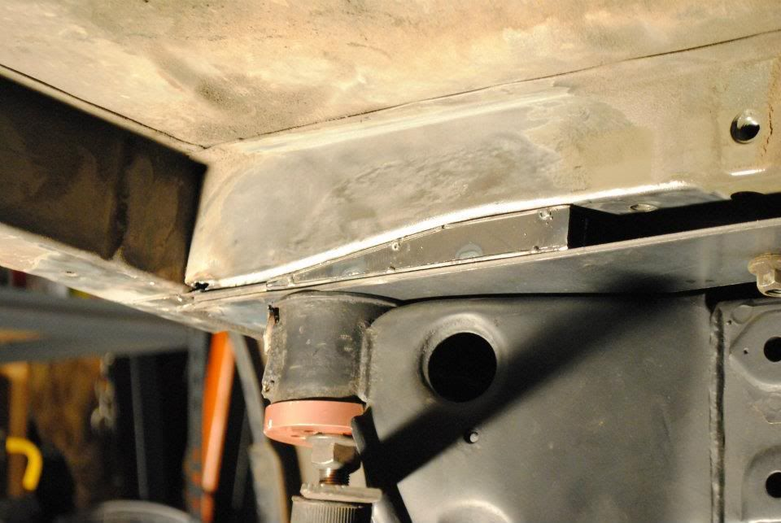
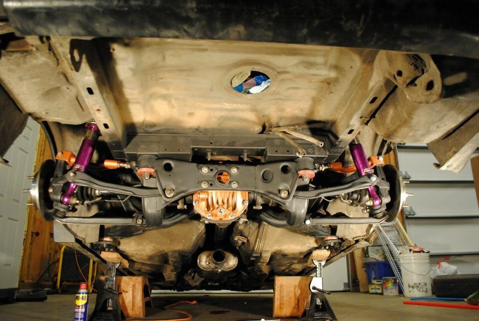

-
Re: S13/S14/S15 Subframe Conversion Kit GB-STANCE MULTILINK!
like this… I believe he replaced his with new bushings, but in his post or the multi link swap post he did address this issue. Also in the first page of the multi link swap KenAZ also addressed the same issue and he used the Z32 subframe.
Yes that is 1" thick piece of alum, cut on a slight angle. And the car sits level at stock height.88na2T-s13,q45 swap 12.6@110mph
87T 2+2 auto,stock -
Re: S13/S14/S15 Subframe Conversion Kit GB-STANCE MULTILINK!
he made a wedge spacer to reposition the coil-over to reduce the bind?
that's a pretty slick solution.
does the coilover bolt into the spacer and then the spacer onto the strut tower? or are there some long ass bolts pressed into the coil-over top mount? -
Re: S13/S14/S15 Subframe Conversion Kit GB-STANCE MULTILINK!
shit it would probably just be easier for me to buy a extra set of uprights and just have the mounts cut and rewelded, no way do I have the ability to cut a spacer like that!1uz Swapped, lowered, flaked out '86 z31
'72 Datsun 510 4dr, ka24de-T, slammed resto mod
'84 z31 turbo, coils, wheels a.k.a the gfs weekend car
'86 na2t parts for now a.k.a eventually will get running with a/c daily
'83 280zx project backburner a.k.a ls turbo drag car one day
Custom vg30et tube chassis drift exocet project -
Re: S13/S14/S15 Subframe Conversion Kit GB-STANCE MULTILINK!
Why don't you guys just modify the stance lower fork thing into the position the upright seems to wish it to be? Like bend one side, and cutoff/extend/bend/reweld the other?sigpic -
Re: S13/S14/S15 Subframe Conversion Kit GB-STANCE MULTILINK!
I was thinking this exact thing a few days back and I might give that a try only thing is the z32 stance upright tubes are $153 for the set so I don't want to fuck them up! But I'm deff considering this method also!Butter wrote: Why don't you guys just modify the stance lower fork thing into the position the upright seems to wish it to be? Like bend one side, and cutoff/extend/bend/reweld the other?
Or possibly even take to pieces of steel flat stock and bend them to the angle and have the bottom bolt to the z31 stock mount and the top bolt to the s13 lower mount ton the bottom of the coil sort of like a solid H bracket!1uz Swapped, lowered, flaked out '86 z31
'72 Datsun 510 4dr, ka24de-T, slammed resto mod
'84 z31 turbo, coils, wheels a.k.a the gfs weekend car
'86 na2t parts for now a.k.a eventually will get running with a/c daily
'83 280zx project backburner a.k.a ls turbo drag car one day
Custom vg30et tube chassis drift exocet project -
Re: S13/S14/S15 Subframe Conversion Kit GB-STANCE MULTILINK!
I finally have some updates and have pics to boot!




sigpic
NWN Moderator
FertilePower on XboxLive -
Re: S13/S14/S15 Subframe Conversion Kit GB-STANCE MULTILINK!
Your offset bushing appears to be installed upside down.
At this point the only this holding the front mount of the subframe up is the bushings press fit.
You must correct this."produce first.talk second." -
Re: S13/S14/S15 Subframe Conversion Kit GB-STANCE MULTILINK!
does that mean the geometry of the subframe now that it has been welded must also be changed significantly?
sheeeeeeeyut.
he could just put a wide washer/plate like the one that comes stock on the Z31 above the bushing to act as a large washer to hold it all up? not sure how safe you guys think that is. but if it needs to come apart again- i'd try that first. -
Re: S13/S14/S15 Subframe Conversion Kit GB-STANCE MULTILINK!
[attachment=1:m39y5m69]s13 subframe frt bushing 1.JPG[/attachment:m39y5m69]ShamWow wrote: Your offset bushing appears to be installed upside down.
At this point the only this holding the front mount of the subframe up is the bushings press fit.
You must correct this.
[attachment=0:m39y5m69]s13 rear subframe complete 3.JPG[/attachment:m39y5m69]
Looking at pic #3, how would you install the bushing the other way? it seems like it would hit the arch on the subframe
Damn… I guess I installed mine wrong also, everything seems fine though.87T, My build thread http://z31performance.com/forum/z31-…lee-s-87t-rb26 -
Re: S13/S14/S15 Subframe Conversion Kit GB-STANCE MULTILINK!
Should have the same alignment, or at least, close enough. Just flip it.
How does it drive? :supersigpic -
Re: S13/S14/S15 Subframe Conversion Kit GB-STANCE MULTILINK!
I havnt driven it yet, everything seems fine, it's all welded in, the subframe swap is done. I guess I will just have to live with it87T, My build thread http://z31performance.com/forum/z31-…lee-s-87t-rb26 -
Re: S13/S14/S15 Subframe Conversion Kit GB-STANCE MULTILINK!
You really shouldn't drive it like that. If you have somehow installed it so that you absolutely can't flip it, then you should find some sort of large washer or something to put on the bottom.1985 NA2T(now RB) * 1988 SS x2 * 1984 AE x3 * 2006 350Z

-
Re: S13/S14/S15 Subframe Conversion Kit GB-STANCE MULTILINK!
Z31P doesn't understand subframe riser type bushing.
That type of bushing raises the subframe closer to the body. This gives some correction to suspension geometry for low cars."produce first.talk second." -
Re: S13/S14/S15 Subframe Conversion Kit GB-STANCE MULTILINK!
As others have stated, this single peice bushing design should only be installed one way. The lip on the one end is critical for support of the subframe.
Here are some pictures of my install… 8)




"…i think bov needs oil, its not closing fast enough so the car dies when you come off of boost…" -Automotive Genius -
Re: S13/S14/S15 Subframe Conversion Kit GB-STANCE MULTILINK!
you at least need to support the mounts from underneath. the bolts are supposed to hold the weight of the subframe up to the car, not the weight of the bushings only.Spooledup300z wrote: Looking at pic #3, how would you install the bushing the other way? it seems like it would hit the arch on the subframe
Damn… I guess I installed mine wrong also, everything seems fine though.
also, if they hit the arch, why wouldn't you just grind the arch?
all those welds look nice. :-( hope you don't have to hack it to shit to get it to work again.
BSRJIRONMAN, work is lookin noiiice.
wondering about this pic though:
you made those super tough ramp/bracket things. then you boxed them in even more. then you put the stud on. then you put the c-bracket over the stud. doesn't that lower the subframe a lot? at what level does the stud "bar" have to be with the rest of the length of the frame that they get tacked to… or does it matter?

Copyright © 2006–. All rights reserved. Privacy Policy